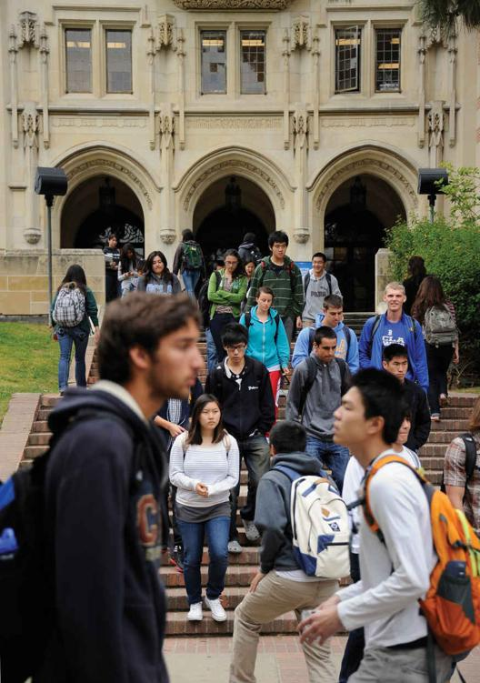

Basic Concepts Learn what sociology covers as a field and how everyday topics are shaped by social and historical forces. Recognize that sociology involves not only acquiring knowledge but also developing a sociological imagination.
The Development of Sociological Thinking Learn how sociology originated and understand the significance of the intellectual contributions of early sociologists.
Modern Theoretical Approaches Be able to identify some of the leading theorists and the concepts they contributed to sociology. Learn the different theoretical approaches modern sociologists bring to the field.
How Can Sociology Help Us? Understand how adopting a sociological perspective allows us to develop a richer understanding of ourselves and the world.
Online college courses have become ever more popular in the past decade. Remote learning is more flexible, and thus more convenient for many students, especially those who hold jobs while pursuing degrees, and less costly for universities. Many exclusive, private institutions, however, have resisted the trend, claiming that in-person learning is far more effective. In 2020, a worldwide state of emergency forced virtually every U.S. college and university to switch to remote learning overnight, leading to a situation that may impact higher education for many years to come.
In late winter of 2020, the global pandemic known as COVID-19 hit the U.S. education system with the force of a major earthquake. As the number of people infected by this new strain of a potentially deadly virus increased day by day, public officials began urging people to cancel public events and limit inessential social intercourse in the hope that “social distancing” would check and eventually stop the contagion. Soon more draconian measures became necessary. Thus, on Friday, March 13, 2020, President Donald Trump declared a state of national emergency. One by one, governors and mayors of deeply affected areas passed ordinances closing down brick-and-mortar businesses, restaurants, entertainment venues, and public institutions.
Although it was known that those under 20 years of age without preexisting medical conditions were at minimal risk of dying from COVID-19, they could easily contract the virus in the classroom and pass it on to their elders and others at risk. Within a few days of the president’s declaration, therefore, colleges and universities began shutting their dorms on short notice and sending students home for the rest of the semester. School districts across the United States followed suit, announcing that they too would be closing down for an indefinite period. Each institution—public or private—was left to its own devices to figure out how to conduct a massive switch to remote learning within a week or two.
The pandemic placed a great burden not only on educators but also on working parents who were suddenly called upon to find someone to supervise their children at home, just as they themselves were dealing with the threat of impending unemployment and the need to protect older relatives more vulnerable to the disease. Many could not afford day care, while those who could were often nervous about leaving children in places where they could contract the virus. As the crisis escalated, day cares too began closing, leaving parents with no alternative but to keep their children at home, or with anybody they could find. The rapid rise in fatalities soon led governors across the country to issue “shelter in place” ordinances that shut down all inessential businesses and services and forced people indoors indefinitely. Although some could continue working remotely from home, millions more found themselves out of work, at least into the indefinite future, and wondering about their future once the virus ran its course. Indeed, many found themselves more stressed about logistics than about the actual disease.
The rapid change to distance learning for all classes highlighted inequalities among students that traditional campus life often obscured.
This massive upheaval amplified changes and societal trends in the works since the early twenty-first century. Online classes, for example, though peripheral to and even resisted by many private elite institutions, were already common at state universities and commuter schools due to their cost-effectiveness and convenience for less affluent or unconventional students who need to work while attending school. During the pandemic, however, everyone—regardless of their knowledge of online teaching tools—was forced to enter a virtual classroom operated by programs such as Zoom and Webex and adjust their pedagogical methods accordingly. In an unexpected reversal of fortune, faculty at less prestigious institutions now had a considerable advantage over their more privileged colleagues, who were rushed through the essentials by hastily organized online workshops that they often had difficulty following.
The problems facing K-12 education were of a different sort. Although some school districts around the country already used programs such as Google Classroom to assist in teaching, many, especially in poorer regions, still relied on traditional in-person pedagogical methods that were not easily adaptable to screens. Moreover, many parents, especially those of low economic status, who suddenly found themselves pushed into the role of teacher, had no idea how to navigate these online tools, let alone teach others how to use them.
On top of dealing with these trying circumstances, parents had to be on constant alert to ensure that their children were attending online classes rather than checking social media, playing games, watching videos, or chatting with friends. Now that even education was reduced to an electronic device, it was virtually impossible to limit screen time or combat children’s obsession with computer games and social media. Cooped up in their homes week after week, parents were likewise glued to the screens as they sought fresh news about the pandemic or tried to sift through the barrage of advice on how to deal with this new reality.
The pandemic exacerbated not only social trends, but also social inequalities and vulnerabilities. Some college students were able to come home to economically stable and secure environments, where they could complete the semester in relative comfort; however much the national emergency disrupted their immediate educational plans, it was unlikely to stop them from reaching their long-term professional goals. Those less affluent, however, sometimes from the very same classes, often returned to cramped households in lower income areas more vulnerable to contagion and thus less conducive to serious study. Bombarded by reports of an imminent economic crisis, these students were also more likely to be stressed by the possibility of financial restraints jeopardizing their educational and professional future.
As students participated in Zoom sessions from their homes, the economic disparities between them could be easily visible from their screens. At college they were used to playing on the same sports teams, eating in the same cafeterias, and living in the same dorms with roommate assignments generated by lottery. Whereas everyday college life disguised many of the disparities, now socioeconomic differences were visible for all to see. One student might be staring into a Zoom session with a background from her parents’ vacation home on the coast of Maine, while another might be on lying on a small bed, the only space to work in a tiny room that had no room for a desk. It was no wonder that many students at either end of the economic spectrum chose to keep their camera off (Casey, 2020).
Although we are by no means ignorant of these stark differences in our everyday lives, we all go through life with a certain limited perspective and certain moments give rise to a heightened consciousness. When the average person suddenly “takes note,” they are using what C. Wright Mills called the sociological imagination, a phrase he coined in 1959 in a now-classic book (Mills, 2000; orig. 1959). Mills tried to understand how the average person in the United States understood his or her everyday life. According to Mills, each of us lives in a very small orbit, and our worldview is limited by the social situations we encounter on a daily basis. These include the family and the small groups we are a part of, the school we attend, and even the dorm in which we live. All these things give rise to a certain limited perspective and point of view.
The average person, according to Mills, doesn’t really understand their personal problems or social situation as part of any kind of larger framework or series of goings-on. Mills argued that we all need to overcome our limited perspective. What is necessary is a certain quality of mind that makes it possible to understand the larger meaning of our experiences. This quality of mind is the sociological imagination.
When some students on a Zoom class start taking note of the social backgrounds of their peers, they are connecting their individual experience to a conception of the larger social structure. If the on-campus college experience itself functioned to obscure the differences between students, the remote learning experience gives rise to a sudden recognition of the difference in home environments.